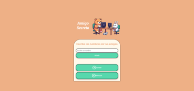

Mis Proyectos
Aquí encontrarás algunos de mis proyectos en desarrollo web y programación.

Proyecto: Amigo secreto
Aplicación web para realizar sorteos de 'Amigo Secreto' entre amigos. Permite agregar nombres, visualizarlos en una lista, realizar un sorteo aleatorio y reiniciar para nuevos sorteos.
Ver en GitHub Visualización en sitio webProyecto: Adivina el número secreto
"Adivina el Número Secreto" es un juego interactivo donde el usuario debe adivinar un número aleatorio entre 1 y 10 con un máximo de 5 intentos. El juego proporciona pistas visuales y textuales para ayudar al usuario a encontrar el número correcto.
Ver en GitHub Visualización en sitio web